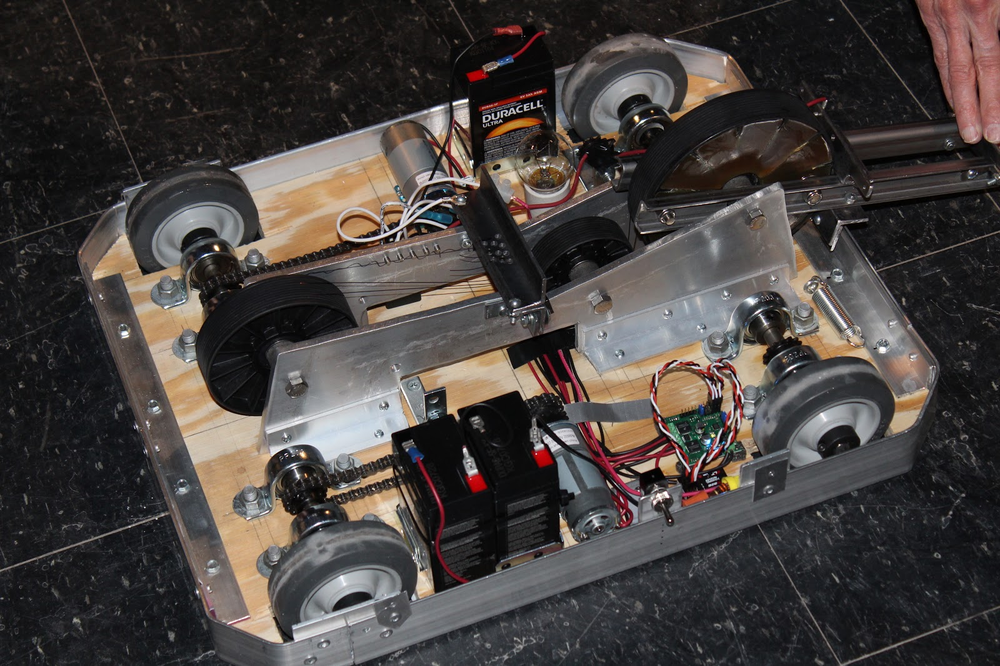
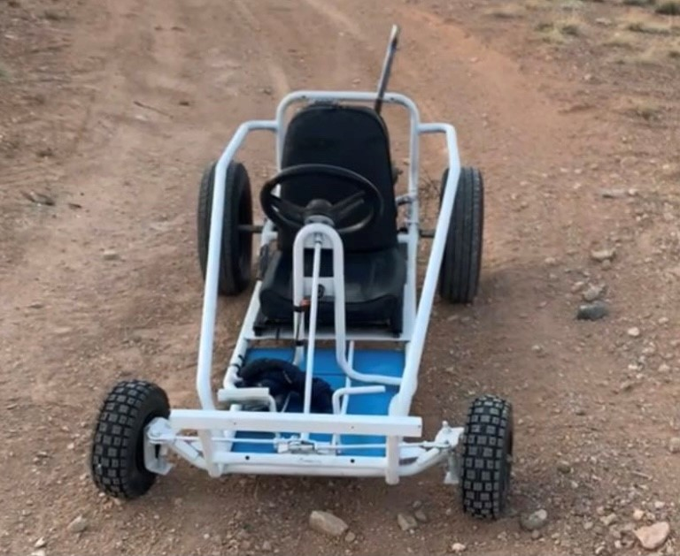
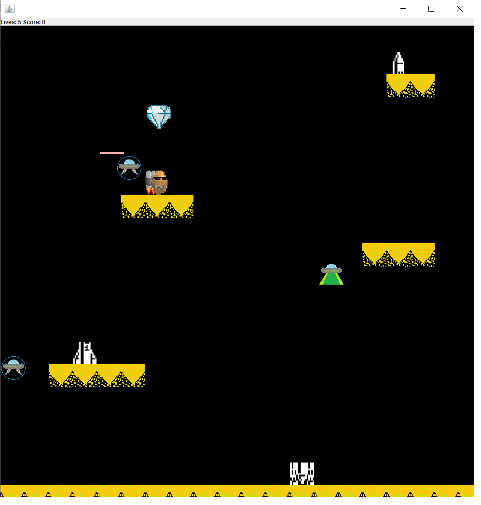
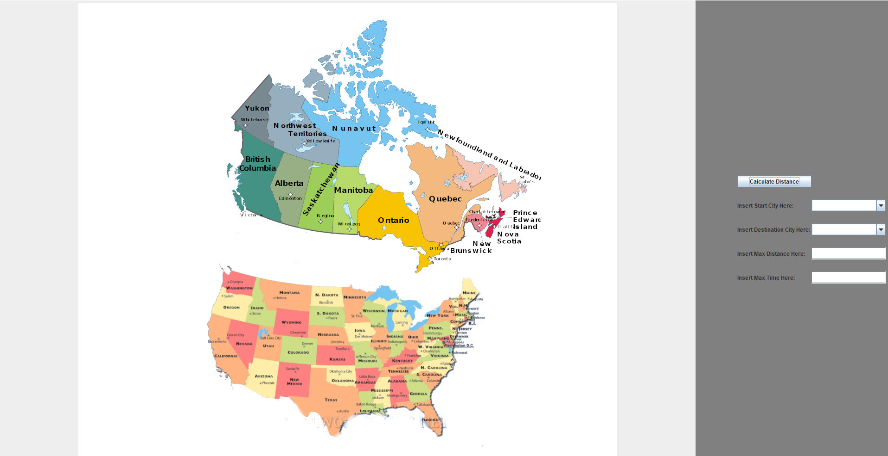

Portfolio
Below are some of the projects that I have worked on over my years as a student.
-
Battlebot
For a school project, I chose to design, prototype and build a functional Battlebot within the specifications of the official Battlebot compettiton.
-
Go-cart
As a doubled school-project/passion-project, several of my friends and I designed, funded, and built a functioning go-cart.
-
Arcade Game Project
A partner and I made attempted to copy the basic functionalities of a retro arcade Game with our own stylized twist.
-
Navigation System Project
A team and I made created a basic navigation system of the state capitals (as well as some capitol cities in canada).